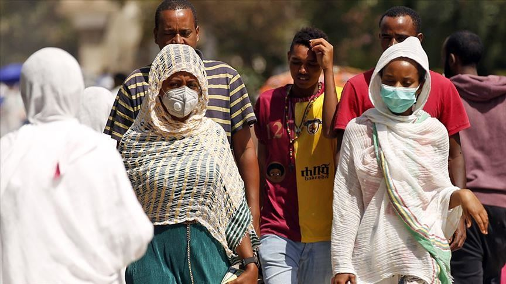

How is COVID19 affecting Africa?

The COVID-19 pandemic has affected the entire globe and continues to alter life as we know it. But as COVID-19 cases soar in Europe, the United States, Brazil, and India, confirmed COVID-19 cases in Africa remain comparatively low. With a population of 1.2 billion and weak health infrastructure, experts feared that COVID-19 would severely impact the entire continent of Africa. Speculation is growing that Africa’s youth bulge and warmer climate could help spare most African countries from the worst of the health pandemic.
The COVID-19 case has increased significantly especially in Ethiopia when we compared the COVID-19 case from June 04 to November 04, it has gone from being 17th to being 4th in Africa.
This is the June 04 chart of COVID-19 case in Africa.
This is the November 04 chart of COVID-19 case in Africa.
What to do if you're sick?
Stay home except to get medical care
Stay home. Most people with COVID-19 have mild illness and can recover at home without medical care. Do not leave your home, except to get medical care. Do not visit public areas. Take care of yourself. Get rest and stay hydrated. Take over-the-counter medicines, such as acetaminophen, to help you feel better. Stay in touch with your doctor. Call before you get medical care. Be sure to get care if you have trouble breathing, or have any other emergency warning signs, or if you think it is an emergency. Avoid public transportation, ride-sharing, or taxis.
Separate yourself from other people
As much as possible, stay in a specific room and away from other people and pets in your home. If possible, you should use a separate bathroom. If you need to be around other people or animals in or outside of the home, wear a mask. Tell your close contacts that they may have been exposed to COVID-19. An infected person can spread COVID-19 starting 48 hours (or 2 days) before the person has any symptoms or tests positive. By letting your close contacts know they may have been exposed to COVID-19, you are helping to protect everyone. Additional guidance is available for those living in close quarters and shared housing. See COVID-19 and Animals if you have questions about pets. If you are diagnosed with COVID-19, someone from the health department may call you. Answer the call to slow the spread.
Cover your coughs and sneezes
Cover your mouth and nose with a tissue when you cough or sneeze. Throw away used tissues in a lined trash can. Immediately wash your hands with soap and water for at least 20 seconds. If soap and water are not available, clean your hands with an alcohol-based hand sanitizer that contains at least 60% alcohol.
Clean your hands often
Wash your hands often with soap and water for at least 20 seconds. This is especially important after blowing your nose, coughing, or sneezing; going to the bathroom; and before eating or preparing food. Use hand sanitizer if soap and water are not available. Use an alcohol-based hand sanitizer with at least 60% alcohol, covering all surfaces of your hands and rubbing them together until they feel dry. Soap and water are the best option, especially if hands are visibly dirty. Avoid touching your eyes, nose, and mouth with unwashed hands. Handwashing Tips
Avoid sharing personal household items
Do not share dishes, drinking glasses, cups, eating utensils, towels, or bedding with other people in your home. Wash these items thoroughly after using them with soap and water or put in the dishwasher.
Clean all “high-touch” surfaces everyday
Clean and disinfect high-touch surfaces in your “sick room” and bathroom; wear disposable gloves. Let someone else clean and disinfect surfaces in common areas, but you should clean your bedroom and bathroom, if possible. If a caregiver or other person needs to clean and disinfect a sick person’s bedroom or bathroom, they should do so on an as-needed basis. The caregiver/other person should wear a mask and disposable gloves prior to cleaning. They should wait as long as possible after the person who is sick has used the bathroom before coming in to clean and use the bathroom.High-touch surfaces include phones, remote controls, counters, tabletops, doorknobs, bathroom fixtures, toilets, keyboards, tablets, and bedside tables.